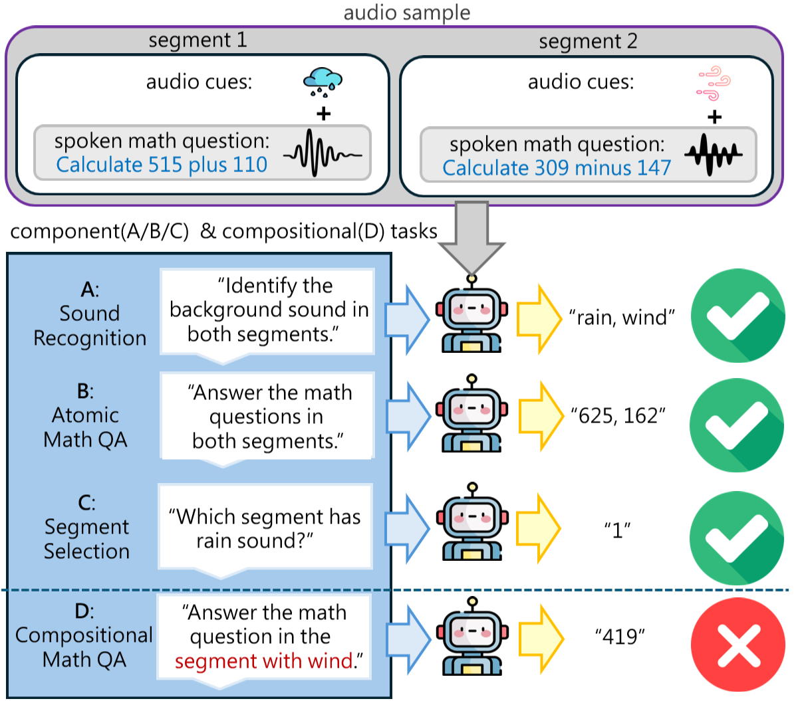

When Capabilities Fail to Compose: Diagnosing the Compositionality Gap in Large Audio-Language Models
Under review, 2026
Large audio-language models that can handle each audio skill on its own often fail when a task requires combining them: accuracy drops in 39 of 40 settings across four open-source models.